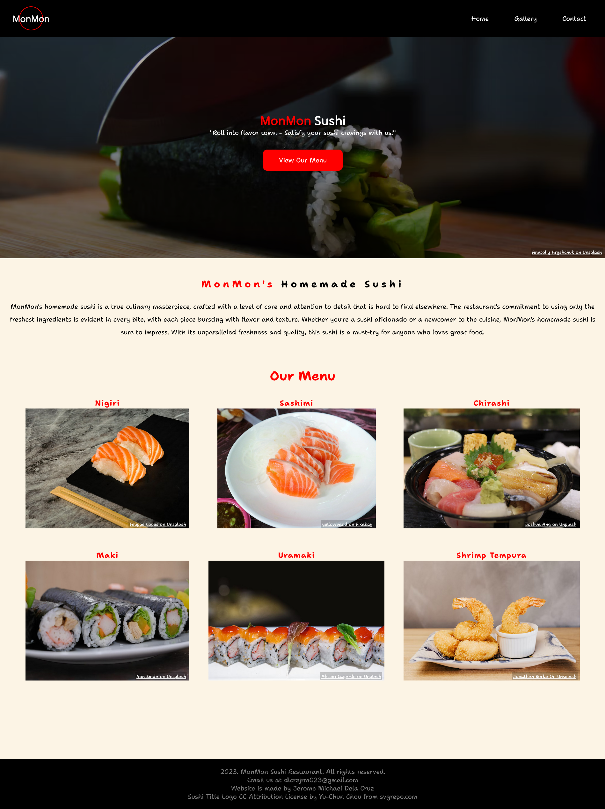
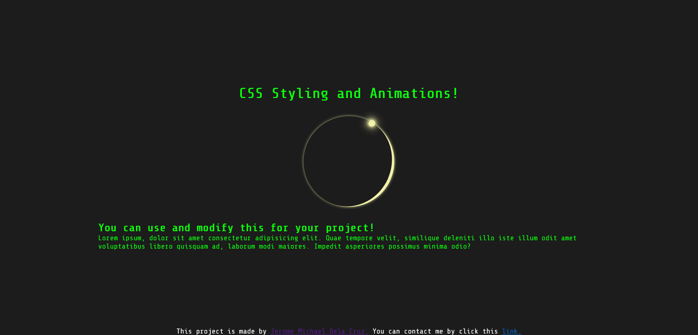
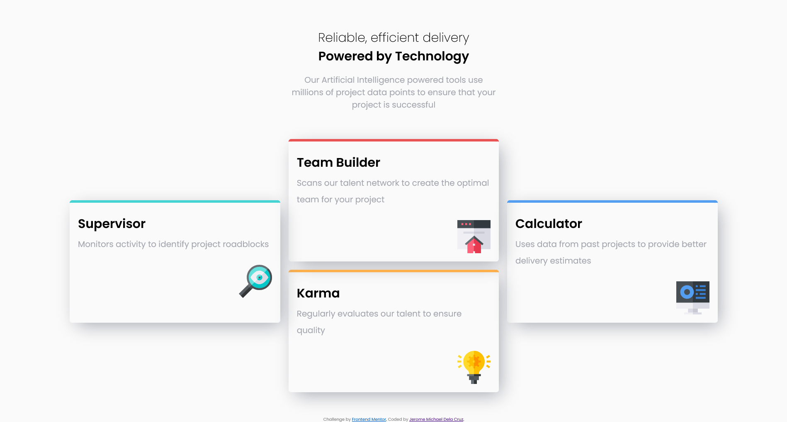

About Me
As a web designer, I love the challenge of taking a client's vision and turning it into a tangible, interactive reality. The process of designing a website is a constant exercise in problem-solving and creativity, which keeps me engaged and excited about each project. Knowing that my work can have a real impact on a business or individual is what drives my passion for web design. Furthermore, below are the projects that I have also done in the past. Also, I love cars and here are my top 5s!
| My Top 5 Cars | ||
|---|---|---|
| Brand | Model | Production Years |
| Mazda | MX-5 Miata | 1997-2023 |
| RX7 | 1997 | |
| BMW | Z4 | 2006-2023 |
| Toyota | GR-86 | 2023 |
| Honda | Civic Type-R | 2023 |
Featured Projects
MonMon Sushi Restaurant
This project is a demonstration of a responsive website.
Click here to view the full projectCSS Styling and Animation
This is a project that involves CSS Stylings and animations!
Click here to view the full projectFour Card Section
This is a challenge by Frontend Mentor and it's a responsive site that features a Four Card Content
Click here to view the full project